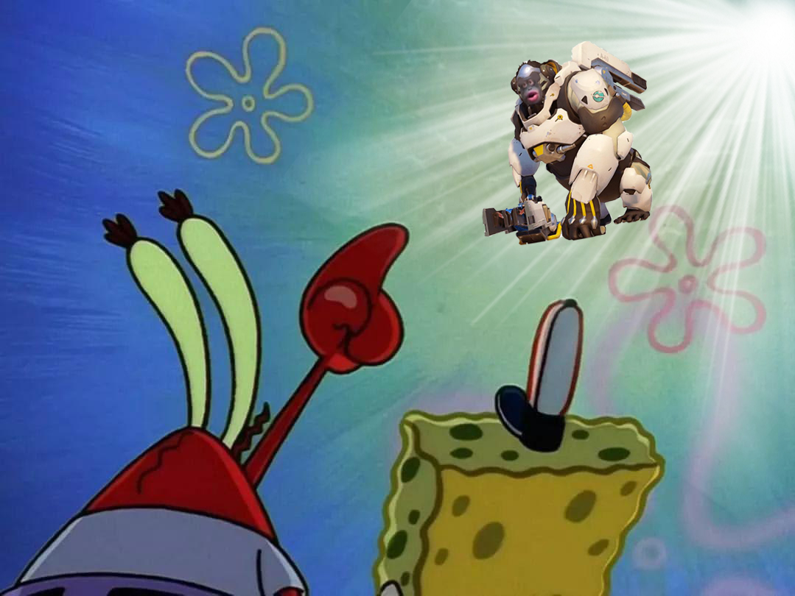

Sandy's best friend Winston is planning on arriving to Bikini Bottom to visit Sandy. In order to find the landing spot for her fellow friend, Sandy asks Spongebob and Mr. Krabs to help find where her space moneky friend would land. For a while all hope is lost until Spongebob and Mr. Krabs hear distant space music coming ou ot no where. Then suddenly, there he is! Floating down to finally arrive at Bikini Bottom. Playing out of this world music to commemorate his landing.
Credits: Smith, John. “Image Stand In” Flickr. Yahoo! Web. 7 Apr. 2011